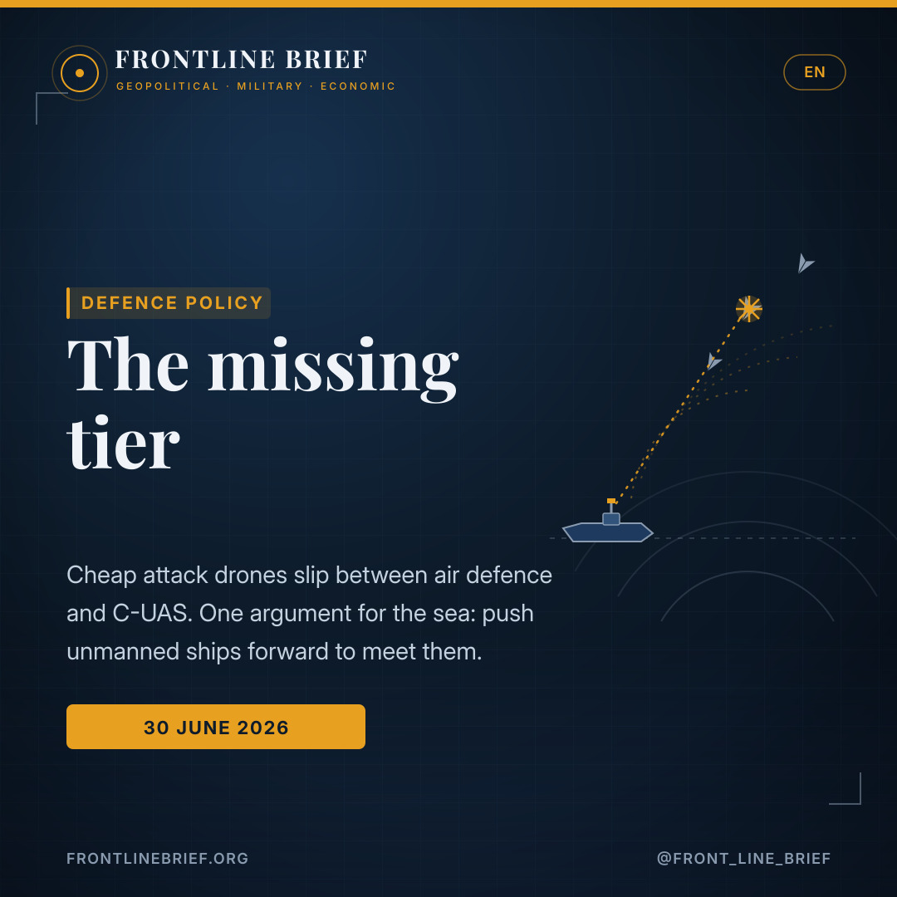
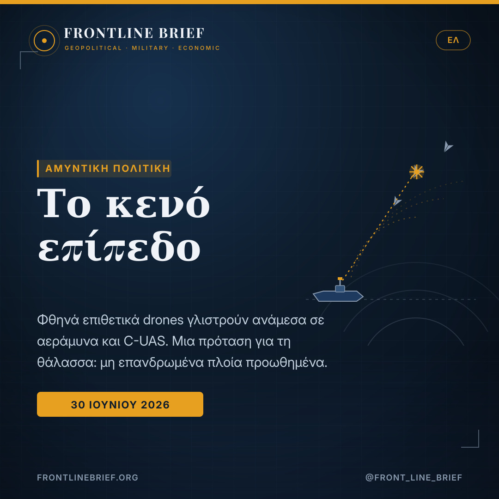
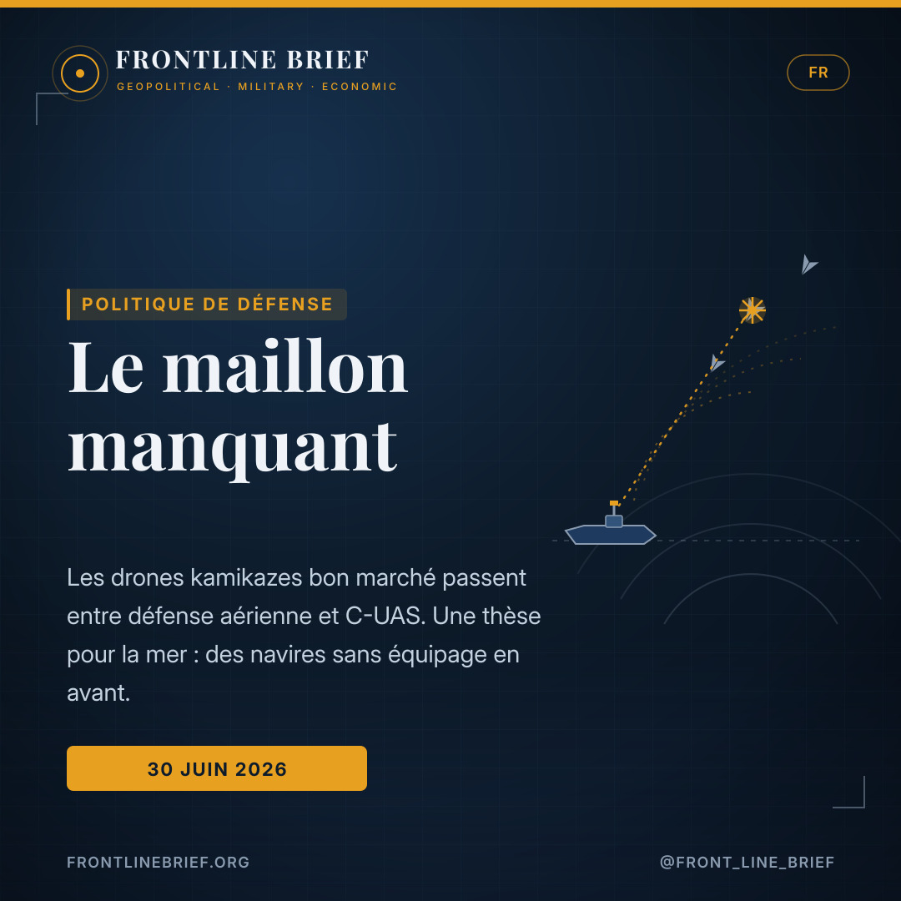
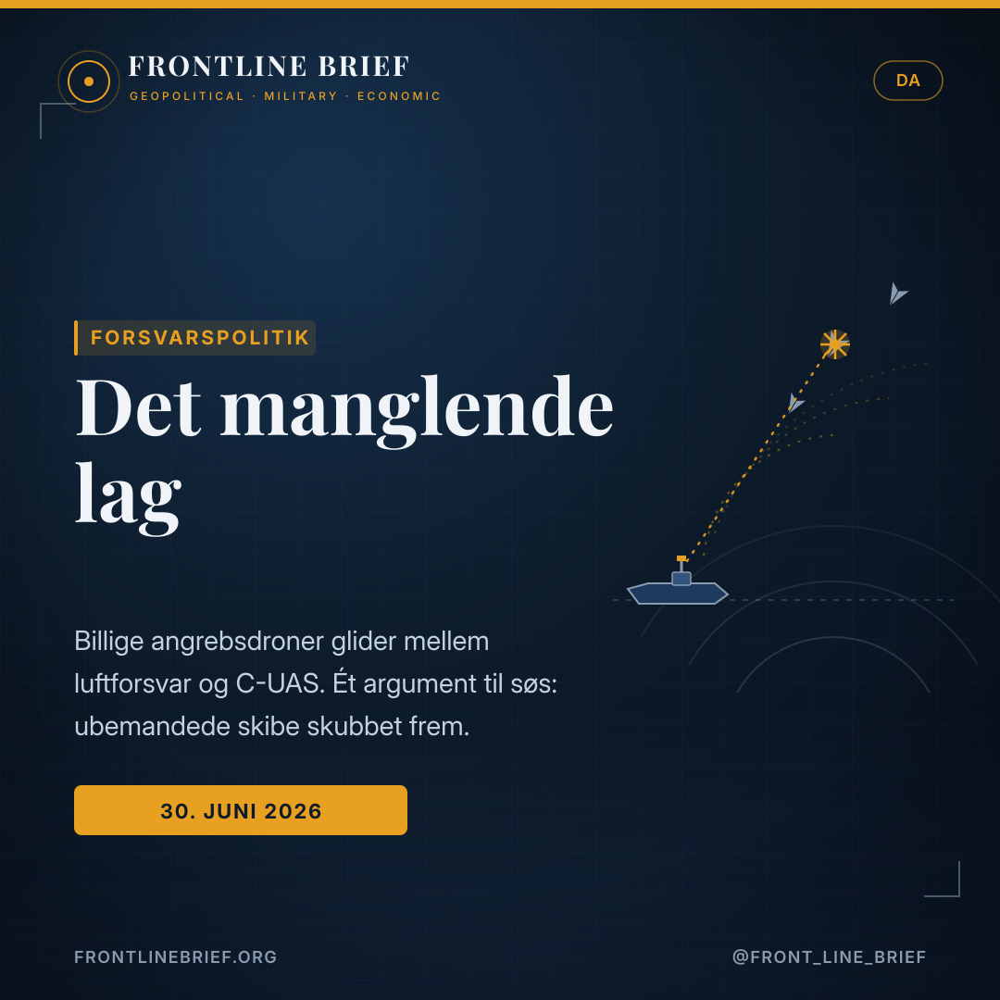
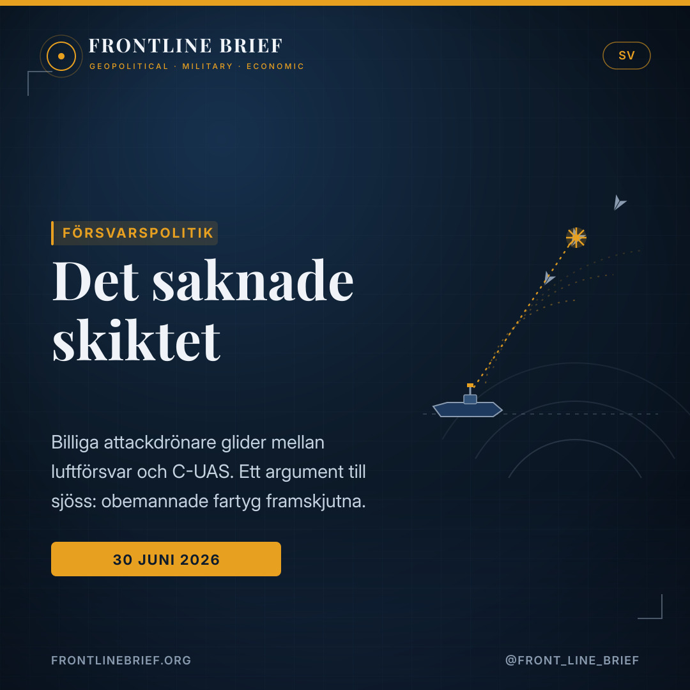

The missing tier: why one argument says navies need a dedicated layer for drone defence at sea
Cheap one-way attack drones now sit in a gap between conventional air defence and counter-UAS — too big for one, too many for the other. A widely shared argument holds that this middle tier deserves its own domain, and that at sea it can only be filled by pushing unmanned ships forward. It is a compelling case; it also comes from an author with a stake in the answer.





Between the boxes
Autonomous one-way attack drones carry a 40–100 kg warhead across hundreds or thousands of kilometres, resist satellite-navigation jamming, and arrive in salvos of tens to hundreds at roughly $20,000–$50,000 each — too capable for counter-UAS, too numerous for high-end air defence.
Losing by winning
Meeting cheap drones with million-dollar interceptors drains a defender's budget and political will faster than it drains the attacker's production. Studies cited put cost-per-engagement across systems at more than five orders of magnitude apart.
The sea as the shield
An unmanned surface vessel with an air-search radar 30 km forward buys about ten extra minutes against a 185 km/h drone, three against a jet-powered one — and can reposition, concentrate and escort in ways a fixed shore site cannot.
Note. This piece summarises an analysis published by Naval News and written by Hasan Özyurt, a retired rear admiral who works at ULAQ Global, a maker of armed unmanned surface vessels. The framework is widely discussed on its own merits; readers should nonetheless weigh the author's commercial interest in the unmanned-ship solution he advocates.
A threat that doesn't fit the boxes
Defence planners, the argument runs, have sorted the aerial threat into two familiar boxes: conventional air defence for aircraft, cruise missiles and large drones, and counter-UAS for small commercial quadcopters. Between them a middle tier has grown up almost unnoticed — the autonomous one-way attack (OWA) drone. It carries a substantial warhead over long range, shrugs off satellite-navigation jamming, and comes in saturating salvos at a unit price a fraction of the weapons fired to stop it. Recent wars, from Nagorno-Karabakh to Ukraine to the Red Sea, are read here as evidence that treating this as either "air defence" or "counter-drone" is a category error.
The economics of exhaustion
The sharpest point in the case is financial. If a defender answers a $30,000 drone with an interceptor costing tens of times more, it wins each engagement and loses the campaign — running out of money, magazines and political patience long before the attacker runs out of drones. The author cites analyses putting cost-per-engagement across counter-drone systems more than five orders of magnitude apart, and lessons from Ukraine and the Red Sea that point the same way: high-volume threats need cheaper, purpose-matched effectors — radar-guided guns and compact precision rounds — not the expensive missiles reserved for aircraft and ballistic threats.
Why the shore isn't enough
Shore-based counter-drone systems work well, the piece concedes — against small, short-range quadcopters approaching fixed sites over land. At sea the argument turns. Low-observable OWA drones can be detected only in the low tens of kilometres over water; at a conservative 10 km, a drone at 200 km/h gives under three and a half minutes to react, and a jet-powered variant leaves seconds. Worse, the shore is geometrically fixed at the very point where engagement depth has already run out. It cannot move up-threat, reposition along a coastline, or escort a ship under way. In the author's words, the shore is "the last line, and often the only one."
The sea itself is the defensive space — and not using it, the author argues, is the strategic gap.
The unmanned ship as the answer
His proposed fix is the unmanned surface vessel. Push a USV carrying an AESA radar 30 km up the threat axis and it meets the drones earlier — roughly ten extra minutes against a slow drone, three against a fast one — not because its sensor is better, but because it is closer to the problem. A screen of such craft can shift to where intelligence expects the attack, or escort convoys at sea. Being small, a 10–15 metre USV is also hard to see and cheap to lose, and a purpose-built hull can carry the whole kill chain: a radar tuned for low-signature targets, an electro-optical director, and a low-cost precision effector.
Doctrine, not just hardware — and a caveat
Hardware alone, the analysis stresses, is not enough: a saturation attack of dozens of drones across a wide front demands automated target allocation and command-and-control at the force level, echoing US Navy lessons from the Red Sea about magazine depth and integrated C2. The logic is coherent and increasingly mainstream. Two caveats are worth keeping in view. The author works for a company that builds exactly the armed USVs he recommends, so the conclusion aligns with a commercial interest. And unmanned screens raise their own questions — communications resilience, rules of engagement, and the risk of losing forward sensors to the very salvos they are meant to blunt. The framework is a useful way to think about a real and growing gap; it is not the only way to close it.
Σημείωση. Το κείμενο συνοψίζει ανάλυση που δημοσιεύθηκε στο Naval News και υπογράφει ο Χασάν Οζγιούρτ, απόστρατος υποναύαρχος που εργάζεται στην ULAQ Global, κατασκευάστρια οπλισμένων μη επανδρωμένων επιφανείας σκαφών (USV). Το πλαίσιο συζητείται ευρέως αυτοτελώς· ο αναγνώστης ωστόσο οφείλει να σταθμίσει το εμπορικό συμφέρον του συγγραφέα στη λύση που προτείνει.
Μια απειλή που δεν χωρά στα κουτιά
Οι σχεδιαστές άμυνας, λέει το επιχείρημα, έχουν ταξινομήσει την εναέρια απειλή σε δύο γνώριμα κουτιά: συμβατική αεράμυνα για αεροσκάφη, πυραύλους cruise και μεγάλα drones, και C-UAS για μικρά εμπορικά quadcopters. Ανάμεσά τους μεγάλωσε σχεδόν απαρατήρητο ένα ενδιάμεσο επίπεδο — το αυτόνομο επιθετικό drone μιας κατεύθυνσης (OWA). Φέρει σημαντική κεφαλή σε μεγάλη απόσταση, αγνοεί την παρεμβολή δορυφορικής πλοήγησης, και έρχεται σε κορεστικά κύματα με τιμή μονάδας κλάσμα των όπλων που εκτοξεύονται για να το σταματήσουν. Πρόσφατοι πόλεμοι, από το Ναγκόρνο-Καραμπάχ ως την Ουκρανία και την Ερυθρά Θάλασσα, διαβάζονται εδώ ως απόδειξη ότι το να το αντιμετωπίζεις είτε ως «αεράμυνα» είτε ως «αντι-drone» είναι σφάλμα κατηγοριοποίησης.
Η οικονομία της εξάντλησης
Το πιο αιχμηρό σημείο είναι οικονομικό. Αν ο αμυνόμενος απαντά σε ένα drone 30.000 δολαρίων με αναχαιτιστικό που κοστίζει δεκάδες φορές περισσότερο, κερδίζει κάθε εμπλοκή και χάνει την εκστρατεία — ξεμένει από χρήμα, πυρομαχικά και πολιτική υπομονή πολύ πριν ξεμείνει από drones ο επιτιθέμενος. Ο συγγραφέας παραθέτει αναλύσεις που τοποθετούν το κόστος ανά εμπλοκή σε πάνω από πέντε τάξεις μεγέθους διαφορά, και μαθήματα από Ουκρανία και Ερυθρά Θάλασσα που δείχνουν το ίδιο: οι απειλές μεγάλου όγκου χρειάζονται φθηνότερα, ειδικά προσαρμοσμένα μέσα — πυροβόλα καθοδηγούμενα από ραντάρ και συμπαγή βλήματα ακριβείας — όχι τους ακριβούς πυραύλους που φυλάσσονται για αεροσκάφη και βαλλιστικές απειλές.
Γιατί η ακτή δεν αρκεί
Τα χερσαία αντι-drone συστήματα δουλεύουν καλά, παραδέχεται το κείμενο — κόντρα σε μικρά, μικρής εμβέλειας quadcopters που πλησιάζουν σταθερές εγκαταστάσεις πάνω από ξηρά. Στη θάλασσα το επιχείρημα αλλάζει. Τα δυσδιάκριτα OWA drones εντοπίζονται μόνο σε λίγες δεκάδες χιλιόμετρα πάνω από νερό· με συντηρητικά 10 χλμ., ένα drone στα 200 χλμ./ώρα δίνει κάτω από τρεισήμισι λεπτά για αντίδραση, και μια εκδοχή με κινητήρα τζετ αφήνει δευτερόλεπτα. Χειρότερα, η ακτή είναι γεωμετρικά καθηλωμένη ακριβώς εκεί όπου το βάθος εμπλοκής έχει ήδη εξαντληθεί. Δεν μπορεί να κινηθεί προς την απειλή, να επανατοποθετηθεί κατά μήκος ακτογραμμής, ή να συνοδεύσει πλοίο εν πλω. Με τα λόγια του συγγραφέα, η ακτή είναι «η τελευταία γραμμή, και συχνά η μόνη».
Η ίδια η θάλασσα είναι ο αμυντικός χώρος — και το να μην τον αξιοποιείς, υποστηρίζει ο συγγραφέας, είναι το στρατηγικό κενό.
Το μη επανδρωμένο σκάφος ως απάντηση
Η προτεινόμενη λύση του είναι το μη επανδρωμένο σκάφος επιφανείας. Προώθησε ένα USV με ραντάρ AESA 30 χλμ. κατά μήκος του άξονα της απειλής και συναντά τα drones νωρίτερα — περίπου δέκα επιπλέον λεπτά κόντρα σε αργό drone, τρία κόντρα σε γρήγορο — όχι επειδή ο αισθητήρας του είναι καλύτερος, αλλά επειδή είναι πιο κοντά στο πρόβλημα. Ένα «πέτασμα» τέτοιων σκαφών μπορεί να μετακινηθεί εκεί όπου οι πληροφορίες αναμένουν την επίθεση, ή να συνοδεύσει νηοπομπές στη θάλασσα. Όντας μικρό, ένα USV 10-15 μέτρων είναι επίσης δυσδιάκριτο και φθηνό να χαθεί, και ένα ειδικά σχεδιασμένο σκαρί μπορεί να φέρει ολόκληρη την αλυσίδα προσβολής: ραντάρ ρυθμισμένο για στόχους χαμηλής υπογραφής, ηλεκτρο-οπτικό σύστημα και ένα φθηνό μέσο ακριβείας.
Δόγμα, όχι μόνο υλικό — και μια επιφύλαξη
Το υλικό από μόνο του, τονίζει η ανάλυση, δεν αρκεί: μια κορεστική επίθεση δεκάδων drones σε ευρύ μέτωπο απαιτεί αυτοματοποιημένη κατανομή στόχων και διοίκηση-έλεγχο σε επίπεδο δύναμης, απηχώντας τα μαθήματα του Αμερικανικού Ναυτικού από την Ερυθρά Θάλασσα για το βάθος πυρομαχικών και το ολοκληρωμένο C2. Η λογική είναι συνεκτική και ολοένα πιο κυρίαρχη. Δύο επιφυλάξεις αξίζει να μένουν υπόψη. Ο συγγραφέας εργάζεται σε εταιρεία που κατασκευάζει ακριβώς τα οπλισμένα USV που συνιστά, οπότε το συμπέρασμα ευθυγραμμίζεται με εμπορικό συμφέρον. Και τα μη επανδρωμένα «πετάσματα» εγείρουν δικά τους ερωτήματα — ανθεκτικότητα επικοινωνιών, κανόνες εμπλοκής, και τον κίνδυνο να χαθούν οι προωθημένοι αισθητήρες από τα ίδια τα κύματα που υποτίθεται ότι αμβλύνουν. Το πλαίσιο είναι ένας χρήσιμος τρόπος να σκεφτείς ένα υπαρκτό και διευρυνόμενο κενό· δεν είναι ο μόνος τρόπος να το κλείσεις.
Note. Cet article résume une analyse publiée par Naval News et signée par Hasan Özyurt, contre-amiral en retraite employé par ULAQ Global, fabricant de navires de surface sans équipage armés (USV). Le cadre est largement débattu pour ses mérites propres ; le lecteur doit néanmoins peser l'intérêt commercial de l'auteur dans la solution qu'il défend.
Une menace qui n'entre pas dans les cases
Les planificateurs, dit l'argument, ont rangé la menace aérienne en deux cases familières : défense aérienne classique pour les avions, missiles de croisière et grands drones, et lutte anti-UAS pour les petits quadricoptères commerciaux. Entre les deux a grandi, presque inaperçu, un maillon intermédiaire — le drone kamikaze autonome (OWA). Il emporte une charge importante sur longue distance, ignore le brouillage de la navigation satellitaire, et arrive en salves saturantes à un prix unitaire dérisoire face aux armes tirées pour l'arrêter. Les guerres récentes, du Haut-Karabakh à l'Ukraine et à la mer Rouge, sont lues ici comme la preuve que le traiter en « défense aérienne » ou en « anti-drone » est une erreur de catégorie.
L'économie de l'épuisement
Le point le plus tranchant est financier. Si un défenseur répond à un drone de 30 000 dollars par un intercepteur coûtant des dizaines de fois plus, il gagne chaque engagement et perd la campagne — à court d'argent, de munitions et de patience politique bien avant que l'attaquant ne manque de drones. L'auteur cite des analyses situant le coût par engagement à plus de cinq ordres de grandeur d'écart, et des leçons d'Ukraine et de mer Rouge convergentes : les menaces de masse exigent des effecteurs moins chers et adaptés — canons guidés par radar et munitions de précision compactes — non les missiles coûteux réservés aux avions et menaces balistiques.
Pourquoi la côte ne suffit pas
Les systèmes anti-drones côtiers fonctionnent bien, concède le texte — contre de petits quadricoptères de courte portée approchant des sites fixes au-dessus des terres. En mer, l'argument bascule. Les drones OWA furtifs ne sont détectés qu'à quelques dizaines de kilomètres au-dessus de l'eau ; à 10 km prudents, un drone à 200 km/h laisse moins de trois minutes et demie, et une variante à réaction, des secondes. Pire, la côte est géométriquement figée là même où la profondeur d'engagement est déjà épuisée. Elle ne peut remonter vers la menace, se repositionner le long d'un littoral, ni escorter un navire en route. Selon l'auteur, la côte est « la dernière ligne, et souvent la seule ».
La mer elle-même est l'espace défensif — et ne pas l'utiliser, soutient l'auteur, est la faille stratégique.
Le navire sans équipage comme réponse
Sa solution est le navire de surface sans équipage. Poussez un USV doté d'un radar AESA à 30 km sur l'axe de la menace et il rencontre les drones plus tôt — environ dix minutes de plus contre un drone lent, trois contre un rapide — non parce que son capteur est meilleur, mais parce qu'il est plus près du problème. Un écran de tels engins peut se porter là où le renseignement attend l'attaque, ou escorter des convois en mer. Petit, un USV de 10-15 mètres est aussi difficile à voir et peu coûteux à perdre, et une coque dédiée peut emporter toute la chaîne d'engagement : radar réglé pour cibles à faible signature, directeur électro-optique et effecteur de précision bon marché.
Doctrine, pas seulement matériel — et une réserve
Le matériel seul, insiste l'analyse, ne suffit pas : une attaque saturante de dizaines de drones sur un large front exige une allocation automatisée des cibles et un commandement au niveau de la force, en écho aux leçons de l'US Navy en mer Rouge sur la profondeur des soutes et le C2 intégré. La logique est cohérente et de plus en plus dominante. Deux réserves méritent d'être gardées à l'esprit. L'auteur travaille pour une entreprise qui construit précisément les USV armés qu'il recommande ; sa conclusion épouse donc un intérêt commercial. Et les écrans sans équipage soulèvent leurs propres questions — résilience des communications, règles d'engagement, et le risque de perdre les capteurs avancés face aux salves mêmes qu'ils doivent émousser. Le cadre est une manière utile de penser une faille réelle et croissante ; ce n'est pas la seule manière de la combler.
Bemærk. Denne artikel opsummerer en analyse offentliggjort af Naval News og skrevet af Hasan Özyurt, en pensioneret kontreadmiral, der arbejder hos ULAQ Global, en producent af bevæbnede ubemandede overfladefartøjer (USV). Rammen debatteres bredt på egne præmisser; læseren bør ikke desto mindre veje forfatterens kommercielle interesse i den løsning, han anbefaler.
En trussel, der ikke passer i kasserne
Forsvarsplanlæggere har, lyder argumentet, sorteret lufttruslen i to velkendte kasser: konventionelt luftforsvar til fly, krydsermissiler og store droner, og C-UAS til små kommercielle quadcoptere. Mellem dem er et mellemlag vokset frem næsten ubemærket — den autonome envejs-angrebsdrone (OWA). Den bærer en betydelig sprænghoved over lang afstand, ignorerer satellitnavigationsstøj og ankommer i mættende salver til en stykpris, der er en brøkdel af de våben, der affyres for at stoppe den. Nylige krige, fra Nagorno-Karabakh til Ukraine og Det Røde Hav, læses her som bevis på, at det er en kategorifejl at behandle den som enten «luftforsvar» eller «anti-drone».
Udmattelsens økonomi
Det skarpeste punkt er økonomisk. Hvis en forsvarer svarer på en drone til 30.000 dollars med en interceptor, der koster titusindvis gange mere, vinder han hver træfning og taber kampagnen — løber tør for penge, magasiner og politisk tålmodighed længe før angriberen løber tør for droner. Forfatteren citerer analyser, der sætter omkostningen pr. træfning mere end fem størrelsesordener fra hinanden, og lektioner fra Ukraine og Det Røde Hav, der peger samme vej: højvolumentrusler kræver billigere, formålsbestemte effektorer — radarstyrede kanoner og kompakte præcisionsprojektiler — ikke de dyre missiler forbeholdt fly og ballistiske trusler.
Hvorfor kysten ikke er nok
Kystbaserede anti-dronesystemer virker godt, medgiver teksten — mod små quadcoptere med kort rækkevidde, der nærmer sig faste anlæg over land. Til søs vender argumentet. Lavsignatur-OWA-droner kan kun opdages i de lave titusinder af kilometer over vand; ved forsigtige 10 km giver en drone ved 200 km/t under tre et halvt minut, og en jetdrevet variant efterlader sekunder. Værre er kysten geometrisk fastlåst netop dér, hvor engagementsdybden allerede er opbrugt. Den kan ikke rykke mod truslen, omplacere sig langs en kystlinje eller eskortere et skib undervejs. Med forfatterens ord er kysten «den sidste linje, og ofte den eneste».
Havet selv er det defensive rum — og ikke at bruge det er, hævder forfatteren, det strategiske hul.
Det ubemandede skib som svar
Hans foreslåede løsning er det ubemandede overfladefartøj. Skub et USV med en AESA-radar 30 km op ad trusselsaksen, og det møder dronerne tidligere — omkring ti ekstra minutter mod en langsom drone, tre mod en hurtig — ikke fordi dets sensor er bedre, men fordi det er tættere på problemet. En skærm af sådanne fartøjer kan flytte sig derhen, hvor efterretninger venter angrebet, eller eskortere konvojer til søs. Lille som det er, er et 10-15 meter USV også svært at se og billigt at miste, og et formålsbygget skrog kan bære hele dræberkæden: en radar indstillet til lavsignaturmål, en elektrooptisk styring og en billig præcisionseffektor.
Doktrin, ikke kun hardware — og et forbehold
Hardware alene, understreger analysen, er ikke nok: et mætningsangreb med dusinvis af droner over en bred front kræver automatiseret målfordeling og kommando-og-kontrol på styrkeniveau, i genklang af US Navys lektioner fra Det Røde Hav om magasindybde og integreret C2. Logikken er sammenhængende og stadig mere fremherskende. To forbehold er værd at holde sig for øje. Forfatteren arbejder for et firma, der bygger netop de bevæbnede USV'er, han anbefaler, så konklusionen flugter med en kommerciel interesse. Og ubemandede skærme rejser deres egne spørgsmål — kommunikationsrobusthed, engagementsregler og risikoen for at miste de fremskudte sensorer til netop de salver, de skal sløve. Rammen er en nyttig måde at tænke et reelt og voksende hul på; det er ikke den eneste måde at lukke det på.
Notering. Denna artikel sammanfattar en analys publicerad av Naval News och skriven av Hasan Özyurt, en pensionerad konteramiral som arbetar hos ULAQ Global, en tillverkare av beväpnade obemannade ytfartyg (USV). Ramverket diskuteras brett i sak; läsaren bör ändå väga författarens kommersiella intresse i den lösning han förordar.
Ett hot som inte passar i lådorna
Försvarsplanerare har, enligt argumentet, sorterat lufthotet i två välbekanta lådor: konventionellt luftförsvar för flygplan, kryssningsrobotar och stora drönare, och C-UAS för små kommersiella quadcoptrar. Mellan dem har ett mellanskikt vuxit fram nästan obemärkt — den autonoma envägs-attackdrönaren (OWA). Den bär en betydande stridsspets över långt avstånd, struntar i satellitnavigeringsstörning och kommer i mättande salvor till ett styckpris som är en bråkdel av de vapen som avfyras för att stoppa den. Nyliga krig, från Nagorno-Karabach till Ukraina och Röda havet, läses här som bevis på att det är ett kategorifel att behandla den som antingen «luftförsvar» eller «anti-drönare».
Utmattningens ekonomi
Den skarpaste punkten är ekonomisk. Om en försvarare svarar på en drönare för 30 000 dollar med en interceptor som kostar tiotals gånger mer, vinner han varje drabbning och förlorar kampanjen — får slut på pengar, magasin och politiskt tålamod långt innan angriparen får slut på drönare. Författaren citerar analyser som sätter kostnaden per drabbning mer än fem storleksordningar isär, och lärdomar från Ukraina och Röda havet som pekar åt samma håll: högvolymshot kräver billigare, ändamålsanpassade verkansmedel — radarstyrda kanoner och kompakta precisionsprojektiler — inte de dyra robotar som reserveras för flygplan och ballistiska hot.
Varför kusten inte räcker
Kustbaserade anti-drönarsystem fungerar väl, medger texten — mot små, kortdistans-quadcoptrar som närmar sig fasta anläggningar över land. Till sjöss vänder argumentet. Lågsignatur-OWA-drönare kan bara upptäckas på de låga tiotals kilometrarna över vatten; vid försiktiga 10 km ger en drönare i 200 km/h under tre och en halv minut, och en jetdriven variant lämnar sekunder. Värre är kusten geometriskt fastlåst just där engagemangsdjupet redan är förbrukat. Den kan inte flytta mot hotet, omplacera sig längs en kustlinje eller eskortera ett fartyg under gång. Med författarens ord är kusten «den sista linjen, och ofta den enda».
Havet självt är det defensiva rummet — och att inte använda det är, hävdar författaren, det strategiska gapet.
Det obemannade fartyget som svar
Hans föreslagna lösning är det obemannade ytfartyget. Skjut fram ett USV med en AESA-radar 30 km längs hotaxeln och det möter drönarna tidigare — omkring tio extra minuter mot en långsam drönare, tre mot en snabb — inte för att dess sensor är bättre, utan för att det är närmare problemet. En skärm av sådana farkoster kan förflytta sig dit underrättelser väntar attacken, eller eskortera konvojer till sjöss. Litet som det är, är ett 10-15 meters USV också svårt att se och billigt att förlora, och ett ändamålsbyggt skrov kan bära hela verkanskedjan: en radar inställd för lågsignaturmål, en elektrooptisk styrning och ett billigt precisionsverkansmedel.
Doktrin, inte bara hårdvara — och en reservation
Hårdvara ensam, betonar analysen, räcker inte: en mättnadsattack med dussintals drönare över en bred front kräver automatiserad måltilldelning och ledning på styrkenivå, i genklang av US Navys lärdomar från Röda havet om magasindjup och integrerat C2. Logiken är sammanhängande och alltmer förhärskande. Två reservationer är värda att hålla i minnet. Författaren arbetar för ett företag som bygger just de beväpnade USV han rekommenderar, så slutsatsen sammanfaller med ett kommersiellt intresse. Och obemannade skärmar väcker sina egna frågor — kommunikationsmotståndskraft, engagemangsregler och risken att förlora de framskjutna sensorerna till just de salvor de ska trubba av. Ramverket är ett användbart sätt att tänka kring ett verkligt och växande gap; det är inte det enda sättet att sluta det.
Sources
- Naval News — Anti-Drone Warfare: The Missing Tier in Maritime Defence Architecture (Hasan Özyurt, (R) Rear Admiral, ULAQ Global; 30 June 2026)
- Cited within: UK Government maritime counter-drone guidance; US DoD unmanned-systems threat assessments; cost-effectiveness analyses 2022–2026; Ukraine and Red Sea operational lessons
- Frontline Brief note — the author's employer, ULAQ Global, manufactures armed unmanned surface vessels; readers should weigh that commercial interest